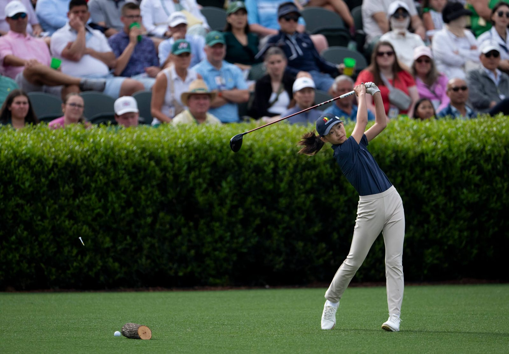
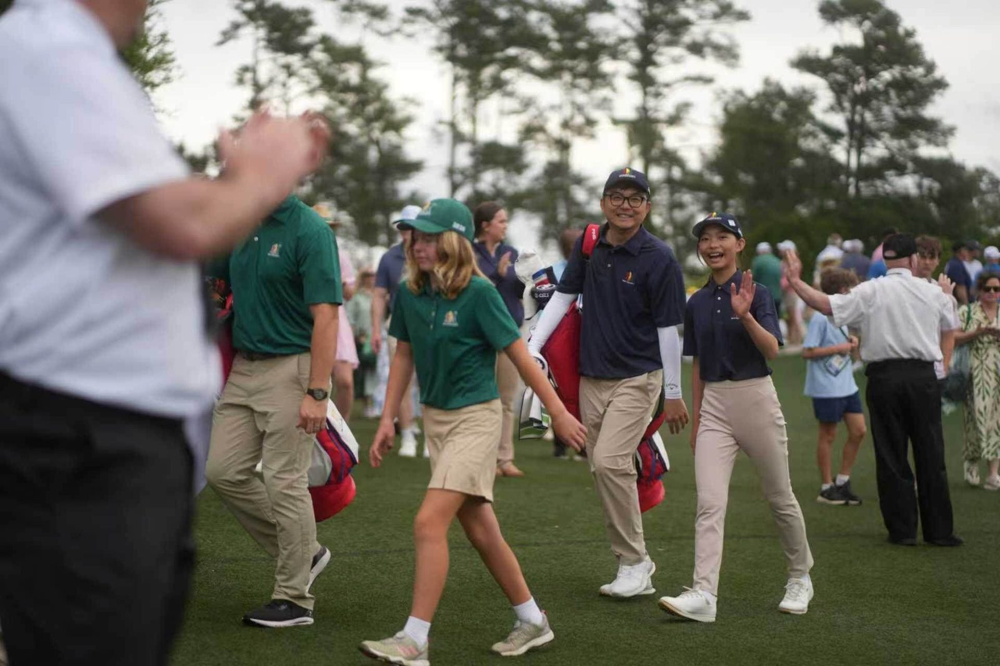
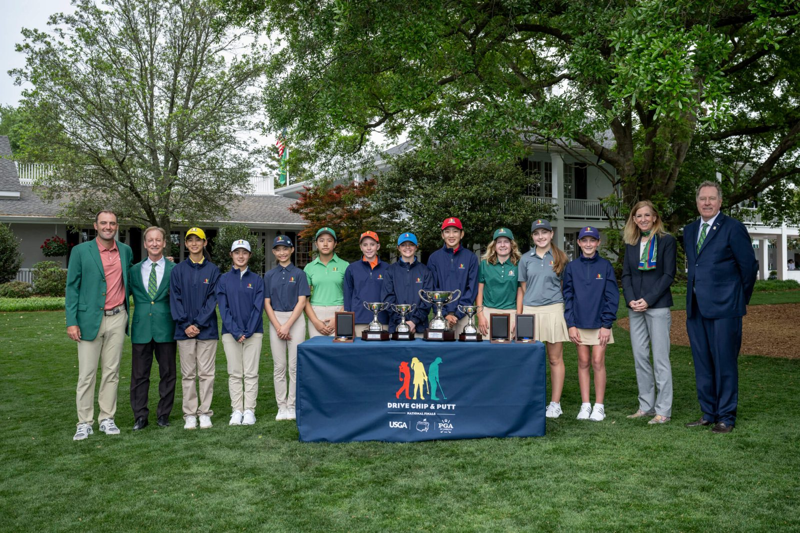

Junior Golf · Canada · Class of 2032
2026 Ontario Girls U13 Champion

A rising Canadian player building an elite record across provincial championships, Golf Canada competition, AJGA events and the Drive, Chip and Putt pathway.
Audrey began golf at a summer camp at age five. Seven years later, she has won a provincial title by 14 strokes, placed inside the top five of Ontario's U19 junior girls championship as one of the youngest players in the field, and competed on the greens of Augusta National. She balances daily practice with her Grade 7 studies at Branksome Hall in Toronto.
“I really hope that the next time I see Augusta National, it’s in the Augusta National Women’s Amateur.”
Her long-term target: a return to Augusta National — this time for the Augusta National Women’s Amateur.
Selected results through October 2026.
Three consecutive AJGA top-eight finishes at age 12 — and the scoring efficiency to climb: Audrey ranks No. 6 in the Rolex AJGA Rankings for the Class of 2032 (as of October 2026).
Drive, Chip and Putt National Finals, April 2026.


Audrey is a Team TaylorMade junior staff player and is proudly supported by Sundog Eyewear. For sponsorship, media and appearance inquiries, please contact her management (parent):
littleprogolferlulu@gmail.com · Instagram @little_pro_golfer_Audrey